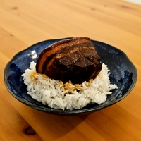

Il s'agit d'une spécialité de la ville de Hangzhou dans la province du Zhejiang.
Son nom est attribué à Su Dongpo, un célèbre poète et gastronome de la dynastie des Song (XIe siècle).
grammes de
grammes de
cuillères à soupe de
millilitres de
millilitres de
cuillères à soupe de
grammes de
grammes de
feuilles de
bâton de
rouleau de
La méthode de mijotage utilisée ici est une technique traditionnelle très employée dans les régions du Jiangsu, Zhejiang ou Hunan mais se retrouve aussi un peu partout en Asie. Elle consiste à mijoter lentement des viandes, poissons ou légumes dans une sauce riche à base de sauce soja, vin de shaoxing, sucre et épices: anis étoilé, cannelle, gingembre pour la plupart du temps mais on peut également trouver en fonction des régions du poivre de sichuan ou des piments séchés par exemple.
La couleur rouge-brun caractéristique provient de la caramélisation du sucre combiné à la sauce soja.
Blanchir la viande avant le mijotage présente un double avantage : d’une part, cette étape élimine les impuretés, et d’autre part, elle préserve la structure de la chair. Sans ce prétraitement, le gras et le maigre pourraient se désolidariser au fil de la cuisson, compromettant ainsi la texture du plat.
Coupez le gingembre (70g) en fines lamelles. Prenez soin de séparer environ 10g pour la prochaine étape.
Coupez le poireau (1) dans le sens de la longueur.
Placez la poitrine de porc entière (700g) peau vers le bas dans une casserole remplie d'eau froide.
Ajoutez le gingembre (10g).
Ajoutez le vin de Shaoxing (2 cuillères à soupe).
Portez à ébullition.
Laissez 10 minutes en enlevant les impuretés à la surface.
Retirez la viande et rincez à l'eau.
Coupez ensuite la poitrine en cubes d'environ 5 cm de long.
Ficelez chaque cube avec de la ficelle de boucher. Cette étape est cruciale afin de maintenir la forme de la viande pendant la cuisson.
Dans une grande casserole, déposez un lit de poireaux afin de couvrir entièrement le fond.
Disposez vos cubes de poitrine de porc de manière espacée, en plaçant la peau vers le bas.
Ajoutez le sucre (50g), le laurier (2), le bâton de cannelle coupé en 2, l'anis étoilé, le vin de Shaoxing (300 mL), la sauce soja (125mL) et la sauce soja foncée (4 cuillères à soupe).
Remplissez la casserole d'eau jusqu'à ce que les cubes soient entièrement submergés.
Portez à ébullition, puis couvrez et réduisez le feu à doux.
Laissez mijoter 2h en rajoutant de l'eau si nécessaire. Vous n'avez pas besoin de mélanger.
Après 2h, augmentez le feu à moyen et enlevez le couvercle.
Laissez la sauce réduire jusqu'à ce qu'elle devienne épaisse.
Retirez les ficelles.
Servez sur du riz blanc, nappez de sauce et dégustez !
